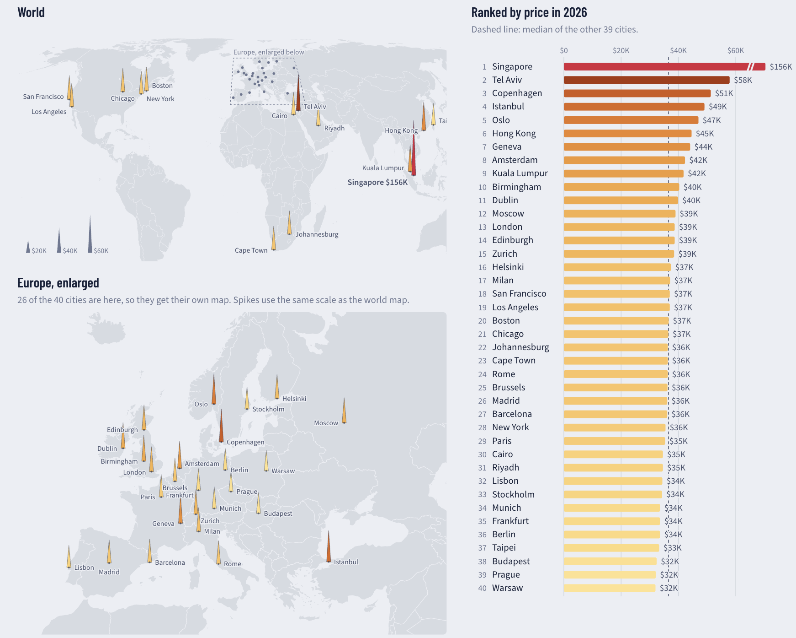

What a new car costs: critique and redesign
1. The original and its context
Visual Capitalist's infographic How Much It Costs to Buy a New Car Across 30 Global Cities (Neufeld & Kostandi, 2026) ranks 30 cities by the 2026 price of a Volkswagen Golf 1.5 or an equivalent new car, in US dollars, using data from Deutsche Bank and Numbeo. A radial bar chart arcs across the top, and a tilted world map below marks each city with a numbered pin. The article's table covers 40 cities and also reports each city's price change since 2016.
The intended message is that Singapore is an extreme outlier at $156K, driven by its vehicle quota system, while most cities sit in a narrow price band. The audience is general readers encountering the graphic in news feeds or on social media. The tasks it should support are ranking cities, comparing prices, spotting the outlier, and locating cities geographically.

2. Critique
Strengths
- Memorable and attention-grabbing. High-contrast colors, bold type and illustration suit a general audience. Research shows that embellished and visually distinctive charts are recalled better than plain ones (Bateman et al., 2010; Borkin et al., 2013).
- Clear ranking and outlier. Bars are sorted and carry rank numbers and value labels, and Singapore is set apart in red with an annotation explaining why.
Weaknesses
- The tilted map and pins hinder lookup. The oblique perspective distorts shapes and compresses distant regions, and the arrow-shaped pins point in different directions. In Europe, more than 15 pins crowd inside a magnifier circle. Pins show only numbers, so readers must shuttle between map and arc to identify each city, a split-attention cost. A flat projection, labeled marks and a separate Europe panel would fix this.
- The radial layout undermines comparison. Bars fan out in different directions with no shared baseline, axis or gridlines, and labels rotate as the arc turns. Most cities fall between $35K and $58K, so differences of a few thousand dollars are invisible and readers fall back on reading labels. Singapore's bar also runs off the canvas without a break mark, hiding that it costs nearly three times the runner-up. Aligned bars with a zero baseline and an explicit break would restore accurate comparison.
- Wasted color and discarded data. The orange-to-yellow gradient repeats the rank already shown by order and length. Meanwhile the graphic drops 10 of the 40 cities and the entire ten-year change column. Color should encode value, and the change data deserves its own view.
3. Redesign rationale
Decision 1: Flat maps with spikes
I replaced the tilted map with a flat Equal Earth world map plus an enlarged map of Europe, where 26 of the 40 cities lie. Each city is a labeled spike whose height encodes the selected measure, on the same scale in both maps, with reference spikes as a key. This addresses the first weakness: the map now carries values and names itself, so no lookup is needed. I chose spikes over proportional circles because length is judged more accurately than area (Cleveland & McGill, 1984), and their narrow bases reduce overlap in dense Europe.
Decision 2: A linked, ranked bar chart
Beside the maps, horizontal bars rank all cities on a zero baseline with gridlines, a median line ($36.5K excluding Singapore) and a visible break on Singapore's bar. Hovering a bar or a spike highlights the same city in both views. This addresses the second weakness and follows task-driven design (Munzner, 2014): the maps answer "where," while the bars answer "how much" and "which rank" precisely.
Decision 3: A measure toggle and meaningful color
A toggle switches both views between the 2026 price and the change since 2016. Color now encodes value with sequential ramps, yellow-orange for price and blue for change, applied identically to spikes and bars. This addresses the third weakness and reveals a story the original hid: price level and growth are almost unrelated (correlation 0.08). Moscow (+134%) and Cape Town (+105%) rose fastest, while Taipei (+5%) and Cairo (+8%) barely moved.

4. Original vs. redesign
The redesign makes it easy to compare cities precisely, see how tightly most prices cluster, find any city on the map by name, and answer a new question: where did prices rise most? None of these was practical in the original. The trade-offs are real, however. The redesign is less striking and likely less memorable. Spikes in Europe still sit close together, and because spikes lack a common baseline, cross-map comparisons rely on the bar chart. The 2016 prices are derived from reported percentages, and changes measured in US dollars include exchange-rate effects, as in Istanbul. Finally, the interactions do not carry over to static screenshots.
References
- Bateman, S., Mandryk, R. L., Gutwin, C., Genest, A., McDine, D., & Brooks, C. (2010). Useful junk? The effects of visual embellishment on comprehension and memorability of charts. Proceedings of CHI 2010, 2573–2582.
- Borkin, M. A., Vo, A. A., Bylinskii, Z., Isola, P., Sunkavalli, S., Oliva, A., & Pfister, H. (2013). What makes a visualization memorable? IEEE Transactions on Visualization and Computer Graphics, 19(12), 2306–2315.
- Bostock, M. Spike map. Observable / D3 gallery.
- Cleveland, W. S., & McGill, R. (1984). Graphical perception: Theory, experimentation, and application to the development of graphical methods. Journal of the American Statistical Association, 79(387), 531–554.
- Deutsche Bank Research. (2026). Mapping the world's prices 2026.
- Munzner, T. (2014). Visualization analysis and design. CRC Press.
- Neufeld, D., & Kostandi, C. (2026). How much it costs to buy a new car across 30 global cities. Visual Capitalist. https://www.visualcapitalist.com/how-much-it-costs-to-buy-a-new-car-in-30-cities-map/
- Numbeo. Cost of living database.
- Bostock, M. world-atlas (v2.0.2): Natural Earth country boundaries in TopoJSON. https://github.com/topojson/world-atlas